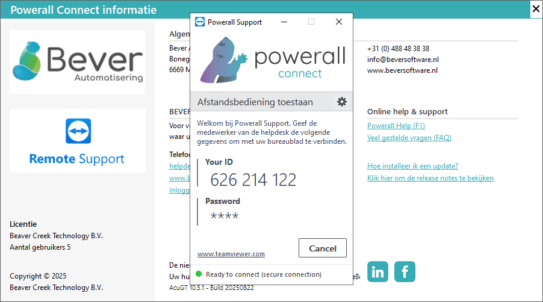

Met remote support is het mogelijk om mee te kijken op een computer, desktops e.d. Om Remote support te starten, doorloopt u de volgende stappen:
-
Ga naar het Powerall Connect informatie symbool
 (i-tje) in de bovenste menubalk.
(i-tje) in de bovenste menubalk. -
Kies voor de knop Remote Support.
-
De installatie van Teamviewer wordt gestart.
-
-
Bevestig de Windows gebruikersaccount melding.
-
Geef het ID en wachtwoord door.

Er is nu een verbinding met Powerall Connect Support, rechtsonder verschijnt het teamviewer support symbool.